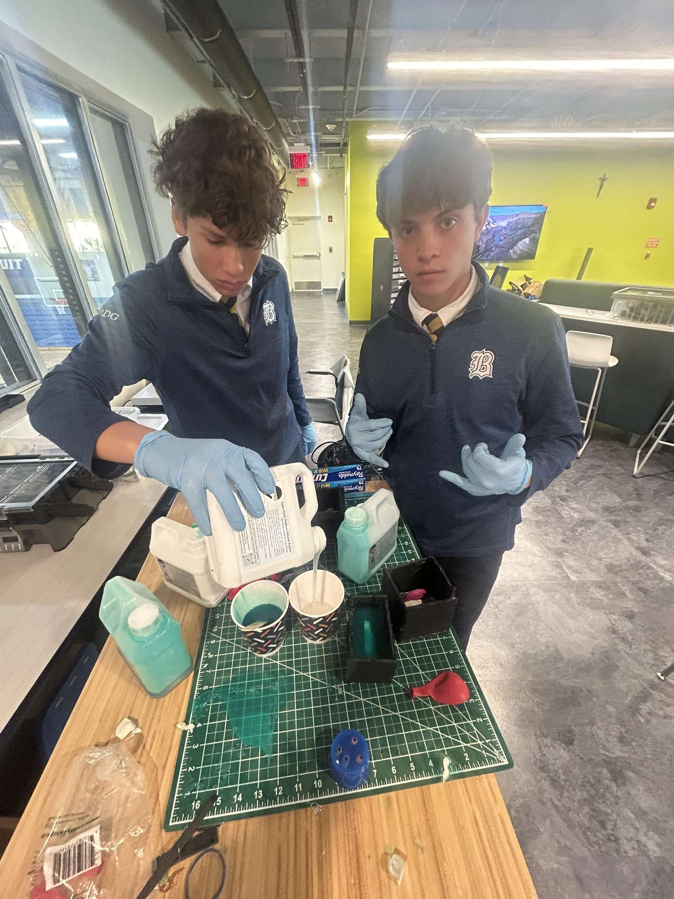
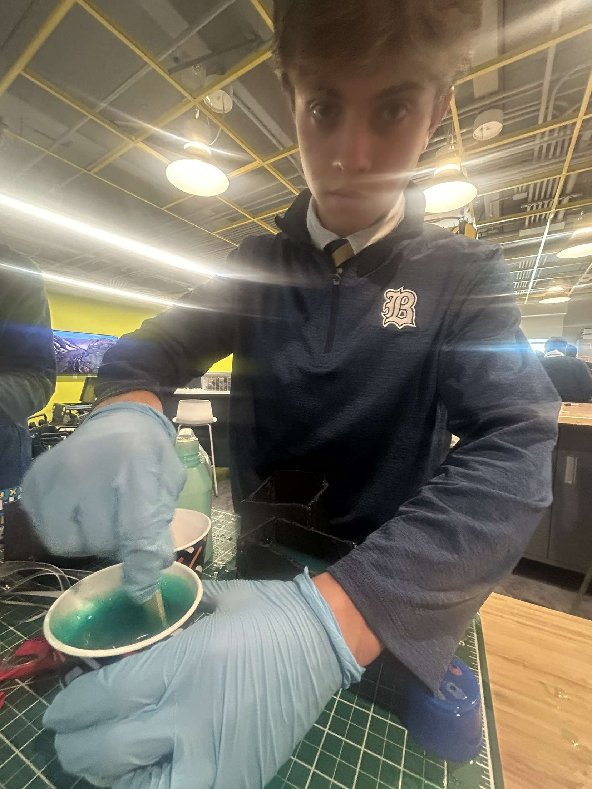
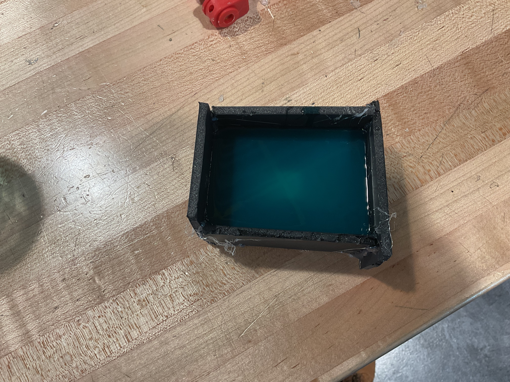
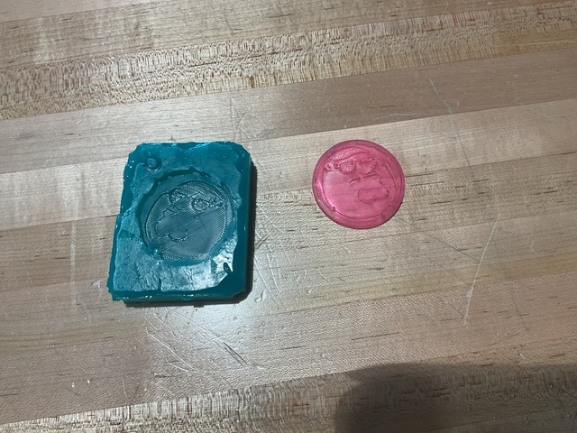

Open Back Molding
- To begin I started by selecting what I would be using to make the mold. I chose a Peter Griffin coin.
- Then I 3D printed the piece so I could have the physical copy of it.
- To make the mold we had to build a box out of cardboard so that we were able to pour in the silicone.
- After, I mixed two different substances into a cup to pour in the silicone.


- I then poured in the silicone and waited two days for it to harden.

- After two days, the molding was done, and now I got the new substance.
- I poured it into the grene mold and waitied another 2 days for it to harden.
- When 2 days passed, it was done, and the Peter Griffin coin was done.
